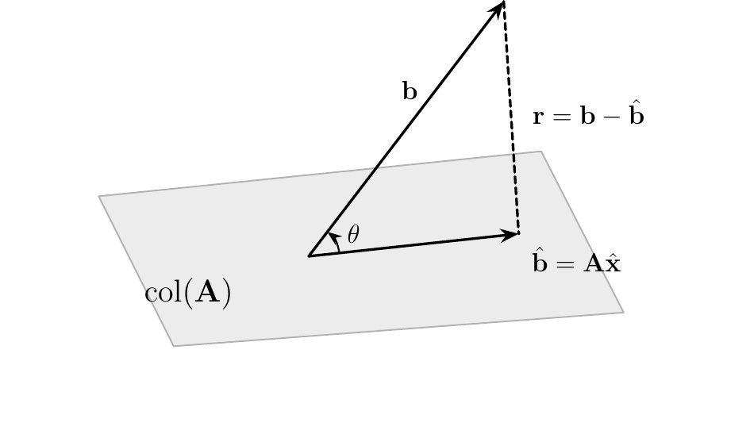
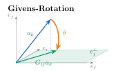
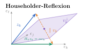

Fortgeschrittene mathematische Methoden in der Statistik
fabian.scheipl@lmu.de)\[ \definecolor{fmmgreen}{RGB}{0,158,115} \definecolor{fmmblue}{RGB}{0,114,178} \definecolor{fmmred}{RGB}{213,94,0} \definecolor{fmmorange}{RGB}{230,159,0} \definecolor{fmmpurple}{RGB}{158,87,213} \newcommand{\ind}{\unicode{x1D7D9}} \newcommand{\R}{{\mathbb{R}}} \newcommand{\N}{{\mathbb{N}}} \newcommand{\Q}{{\mathbb{Q}}} \newcommand{\C}{\mathbb{C}} \newcommand{\P}{\mathbb{P}} \newcommand{\Z}{{\mathbb{Z}}} \newcommand{\E}{{\mathbb{E}}} \newcommand{\K}{{\mathbb{K}}} \newcommand{\L}{\mathbb{L}} \newcommand{\F}{{\mathbb{F}}} \newcommand{\G}{\mathbb{G}} \newcommand{\S}{\mathbb{S}} \newcommand{\D}{{\mathbb{D}}} \newcommand{\bnull}{{\boldsymbol{0}}} \newcommand{\bzero}{{\boldsymbol{0}}} \newcommand{\ba}{{\boldsymbol{a}}} \newcommand{\bb}{{\boldsymbol{b}}} \newcommand{\bc}{{\boldsymbol{c}}} \newcommand{\bd}{{\boldsymbol{d}}} \newcommand{\be}{{\boldsymbol{e}}} \newcommand{\bg}{{\boldsymbol{g}}} \newcommand{\bh}{{\boldsymbol{h}}} \newcommand{\bi}{{\boldsymbol{i}}} \newcommand{\bj}{{\boldsymbol{j}}} \newcommand{\bk}{{\boldsymbol{k}}} \newcommand{\bl}{{\boldsymbol{l}}} \newcommand{\bn}{{\boldsymbol{n}}} \newcommand{\bo}{{\boldsymbol{o}}} \newcommand{\bp}{{\boldsymbol{p}}} \newcommand{\bq}{{\boldsymbol{q}}} \newcommand{\br}{{\boldsymbol{r}}} \newcommand{\bs}{{\boldsymbol{s}}} \newcommand{\bt}{{\boldsymbol{t}}} \newcommand{\bu}{{\boldsymbol{u}}} \newcommand{\bv}{{\boldsymbol{v}}} \newcommand{\bw}{{\boldsymbol{w}}} \newcommand{\bx}{{\boldsymbol{x}}} \newcommand{\by}{{\boldsymbol{y}}} \newcommand{\bz}{{\boldsymbol{z}}} \newcommand{\bA}{{\boldsymbol{A}}} \newcommand{\bB}{{\boldsymbol{B}}} \newcommand{\bC}{{\boldsymbol{C}}} \newcommand{\bD}{{\boldsymbol{D}}} \newcommand{\bE}{{\boldsymbol{E}}} \newcommand{\bF}{{\boldsymbol{F}}} \newcommand{\bG}{{\boldsymbol{G}}} \newcommand{\bH}{{\boldsymbol{H}}} \newcommand{\bI}{{\boldsymbol{I}}} \newcommand{\bJ}{{\boldsymbol{J}}} \newcommand{\bK}{{\boldsymbol{K}}} \newcommand{\bL}{{\boldsymbol{L}}} \newcommand{\bM}{{\boldsymbol{M}}} \newcommand{\bN}{{\boldsymbol{N}}} \newcommand{\bO}{{\boldsymbol{O}}} \newcommand{\bP}{{\boldsymbol{P}}} \newcommand{\bQ}{{\boldsymbol{Q}}} \newcommand{\bR}{{\boldsymbol{R}}} \newcommand{\bS}{{\boldsymbol{S}}} \newcommand{\bT}{{\boldsymbol{T}}} \newcommand{\bU}{{\boldsymbol{U}}} \newcommand{\bV}{{\boldsymbol{V}}} \newcommand{\bW}{{\boldsymbol{W}}} \newcommand{\bX}{{\boldsymbol{X}}} \newcommand{\bY}{{\boldsymbol{Y}}} \newcommand{\bZ}{{\boldsymbol{Z}}} \newcommand{\tagqed}{\tag*{$\blacksquare$}} \newcommand{\Acal}{{\mathcal{A}}} \newcommand{\Bcal}{{\mathcal{B}}} \newcommand{\Ccal}{{\mathcal{C}}} \newcommand{\Dcal}{{\mathcal{D}}} \newcommand{\Ecal}{{\mathcal{E}}} \newcommand{\Fcal}{{\mathcal{F}}} \newcommand{\Gcal}{{\mathcal{G}}} \newcommand{\Hcal}{{\mathcal{H}}} \newcommand{\Ical}{{\mathcal{I}}} \newcommand{\Jcal}{{\mathcal{J}}} \newcommand{\Kcal}{{\mathcal{K}}} \newcommand{\Lcal}{{\mathcal{L}}} \newcommand{\Mcal}{{\mathcal{M}}} \newcommand{\Ncal}{{\mathcal{N}}} \newcommand{\Ocal}{{\mathcal{O}}} \newcommand{\Pcal}{{\mathcal{P}}} \newcommand{\Qcal}{{\mathcal{Q}}} \newcommand{\Rcal}{{\mathcal{R}}} \newcommand{\Scal}{{\mathcal{S}}} \newcommand{\Tcal}{{\mathcal{T}}} \newcommand{\Ucal}{{\mathcal{U}}} \newcommand{\Vcal}{{\mathcal{V}}} \newcommand{\Wcal}{{\mathcal{W}}} \newcommand{\Xcal}{{\mathcal{X}}} \newcommand{\Ycal}{{\mathcal{Y}}} \newcommand{\Zcal}{{\mathcal{Z}}} \newcommand{\eps}{{\varepsilon}} \newcommand{\beps}{{\boldsymbol{\epsilon}}} \newcommand{\balpha}{{\boldsymbol{\alpha}}} \newcommand{\bbeta}{{\boldsymbol{\beta}}} \newcommand{\bchi}{{\boldsymbol{\chi}}} \newcommand{\bdelta}{{\boldsymbol{\delta}}} \newcommand{\bDelta}{{\boldsymbol{\Delta}}} \newcommand{\bepsilon}{{\boldsymbol{\epsilon}}} \newcommand{\bphi}{{\boldsymbol{\phi}}} \newcommand{\bgamma}{{\boldsymbol{\gamma}}} \newcommand{\betah}{{\boldsymbol{\eta}}} \newcommand{\btheta}{{\boldsymbol{\theta}}} \newcommand{\biota}{{\boldsymbol{\iota}}} \newcommand{\bkappa}{{\boldsymbol{\kappa}}} \newcommand{\blambda}{{\boldsymbol{\lambda}}} \newcommand{\bLambda}{{\boldsymbol{\Lambda}}} \newcommand{\bmu}{{\boldsymbol{\mu}}} \newcommand{\bnu}{{\boldsymbol{\nu}}} \newcommand{\bomikron}{{\boldsymbol{\omicron}}} \newcommand{\bpi}{{\boldsymbol{\pi}}} \newcommand{\bSigma}{{\boldsymbol{\Sigma}}} \newcommand{\bxi}{{\boldsymbol{\xi}}} \newcommand{\bzeta}{{\boldsymbol{\zeta}}} \newcommand{\bomega}{{\boldsymbol{\omega}}} \newcommand{\equivto}{{\Leftrightarrow}} \newcommand{\quequiv}{{\quad \equivto \quad}} \newcommand{\impl}{{\implies}} \newcommand{\quimpl}{{\quad \implies \quad}} \newcommand{\implby}{{\impliedby}} \newcommand{\notimplies}{\not\implies} \newcommand{\tr}{{\operatorname{tr}}} \newcommand{\spann}{{\operatorname{span}}} \newcommand{\col}{{\operatorname{col}}} \newcommand{\rang}{{\operatorname{rang}}} \newcommand{\diag}{{\operatorname{diag}}} \newcommand{\vec}{\operatorname{vec}} \newcommand{\pinv}{{^{+}}} \newcommand{\kron}{\mathbin{\otimes_{\mathrm{K}}}} \newcommand{\sign}{{\operatorname{sign}}} \newcommand{\la}{{\langle}} \newcommand{\ra}{{\rangle}} \newcommand{\inner}[1]{{\langle #1 \rangle}} \newcommand{\proj}{{\operatorname{proj}}} \newcommand{\bar}{\overline} \newcommand{\vol}{{\operatorname{vol}}} \newcommand{\dx}{{\, \mathrm{d}x}} \newcommand{\ol}{{\overline}} \newcommand{\argmax}{\mathop{\mathrm{arg\,max}}} \newcommand{\argmin}{\mathop{\mathrm{arg\,min}}} \newcommand{\conv}{\mathop{\mathrm{conv}}} \newcommand{\epi}{\mathop{\mathrm{epi}}} \newcommand{\interior}{\mathop{\mathrm{int}}} \newcommand{\Pr}{\mathbb{P}} \newcommand{\var}{{\mathbb{V}\mathrm{ar}}} \newcommand{\bias}{{\operatorname{bias}}} \newcommand{\abias}{{\mathrm{ABias}}} \newcommand{\AMSE}{{\mathrm{AMSE}}} \newcommand{\AMISE}{{\mathrm{AMISE}}} \newcommand{\cov}{{\mathbb{C}\mathrm{ov}}} \newcommand{\corr}{{\mathrm{Corr}}} \newcommand{\ov}{{\overline}} \newcommand{\wh}[1]{{\widehat{#1}}} \newcommand{\wt}[1]{{\widetilde{#1}}} \newcommand{\tod}{{\stackrel{d}{\to}}} \newcommand{\sumin}{{\sum_{i = 1}^n}} \newcommand{\sumjn}{{\sum_{j = 1}^n}} \newcommand{\KL}{{\operatorname{KL}}} \newcommand{\softmax}{{\operatorname{SoftMax}}} \newcommand{\layernorm}{{\operatorname{LayerNorm}}} \newcommand{\avg}{{\operatorname{avg}}} \newcommand{\relu}{{\operatorname{ReLu}}} \newcommand{\VC}{{\operatorname{VC}}} \newcommand{\indep}{{\perp \!\!\! \perp}} \newcommand{\unif}{{\operatorname{Unif}}} \newcommand{\bern}{{\operatorname{Bernoulli}}} \newcommand{\binomial}{{\operatorname{Binomial}}} \newcommand{\MSE}{{\operatorname{MSE}}} \newcommand{\iid}{\textit{iid}\;} \newcommand{\IF}{{\operatorname{IF} }} \newcommand{\BIC}{{\operatorname{BIC}}} \newcommand{\AIC}{{\operatorname{AIC}}} \newcommand{\IC}{{\operatorname{IC}}} \newcommand{\expl}[1]{{\tag*{[#1]}}} \newcommand{\cb}[1]{\textbf{#1}} \newcommand{\cbgreen}[1]{\textcolor{fmmgreen}{\textbf{#1}}} \newcommand{\cbred}[1]{\textcolor{fmmred}{\textbf{#1}}} \newcommand{\cbpurp}[1]{\textcolor{fmmpurple}{\textbf{#1}}} \newcommand{\cborange}[1]{\textcolor{fmmorange}{\textbf{#1}}} \newcommand{\corange}[1]{{\textcolor{fmmorange}{#1}}} \newcommand{\cblue}[1]{{\textcolor{fmmblue}{#1}}} \newcommand{\cgreen}[1]{{\textcolor{fmmgreen}{#1}}} \newcommand{\cred}[1]{{\textcolor{fmmred}{#1}}} \newcommand{\cpurp}[1]{{\textcolor{fmmpurple}{#1}}} \newcommand{\symbf}[1]{\boldsymbol{#1}} \]
Kondition & Konditionszahl \(\kappa(\bA)\)
Matrixnormen (besonders \(\|\cdot\|_2\)) und Orthogonalmatrizen
Matrixzerlegungen: LU- und Cholesky-Zerlegung
SVD: \(\bA = \bU\bSigma\bV^\top\), Pseudoinverse \(\bA^+\), Reduzierte SVD
Lineare Algebra
Statistik
Frage 1: Sei \(\bA \in \mathbb{R}^{m \times n}\) mit \(\text{rang}(\bA) = n\). Die Kleinste-Quadrate-Lösung \(\hat{\bx}\) von \(\min_{\bx} \|\bA\bx - \bb\|_2\) erfüllt …
Frage 2: Sei \(\hat{\bb} = \text{proj}_{\text{col}(\bA)}\, \bb\) die orthogonale Projektion von \(\bb\) auf den Spaltenraum von \(\bA\). Welche Aussage gilt immer?
Kleinste-Quadrate-Problem (KQ-Problem)
Anmerkung:
KQ-Methode fundamentalst in Statistik und Machine Learning:

Theorem
Die Lösungsmenge des KQ-Problems gleicht der Lösungsmenge des LGS \[\bA \hat{\bx} = \hat{\bb} \quad \text{mit } \hat{\bb} = \proj_{\col(\bA)} \bb.\]
Theorem
Die Lösungsmenge des KQ-Problems gleicht der Lösungsmenge der Normalengleichungen \[\bA^\top \bA \hat{\bx} = \bA^\top \bb.\]
Theorem
Falls \(\rang(\bA) = n\), ist \(\bA^\top \bA\) invertierbar und das KQ-Problem hat die eindeutige Lösung \[\hat{\bx} = (\bA^\top \bA)^{-1} \bA^\top \bb =: \bA^+ \bb.\]
Welche der folgenden Aussagen sind wahr? (mehrere Antworten möglich)
Vorbemerkungen
Theorem
Sei \(\bA \in \R^{m \times n}\) fix und \(f\) das Problem mit Lösung \(f(\bb) = \bA^+ \bb\). Dann gilt \[\begin{align*} \frac{\| f(\tilde{\bb}) - f(\bb)\| }{\| f(\bb)\|} \le \kappa \frac{\| \tilde{\bb} - \bb\| }{\| \bb\| } \quad \text{ mit } \quad \kappa = \kappa_2(\bA) \frac{\|\bb\|}{\left\| \proj_{\col(\bA)} \bb\right\|}. \end{align*}\]
Beweis: siehe Anhang
\[\begin{align*}
\kappa = \kappa_2(\bA) \frac{\|\bb\|}{\left\| \proj_{\col(\bA)} \bb \right\|}
\end{align*}\]
Interpretation
Theorem
Sei \(\bb \in \R^m\) fix und \(f\) das Problem mit Lösung \(f(\bA) = \bA^+ \bb\). Dann gilt für kleine Störungen \(\tilde{\bA} \to \bA\) (in erster Ordnung) \[\begin{align*} \frac{\| f(\tilde{\bA}) - f(\bA)\| }{\| f(\bA)\|} &\lesssim \kappa \frac{\| \tilde{\bA} - \bA\| }{\| \bA\| } \\ \text{mit } \quad \kappa &= \kappa_2(\bA) + \kappa_2(\bA)^2 \frac{\|\br \|}{\left\|\proj_{\col(\bA)} \bb\right\|}. \end{align*}\]
Beweis: Sehr aufwändige und langweilige Rechnung.
\[\begin{align*}
\kappa = \kappa_2(\bA) + \kappa_2(\bA)^2 \frac{\|\br\|}{\left\|\proj_{\col(\bA)}\bb\right\|}
\end{align*}\]
Interpretation
Best case: \(\br = \bnull\) \(\Rightarrow\) \(\bA \bx = \bb\) ist lösbar \(\Rightarrow\) \(\kappa = \kappa_2(\bA)\).
Worst case: \(\proj_{\col(\bA)} \bb = \bnull\), aber \(\br \neq \bnull\)
Normalerweise: \(\br \neq \bnull\) und \(\proj_{\col(\bA)} \bb \neq \bnull\) \(\Rightarrow\) \(\kappa = O(\kappa_2(\bA)^2)\).
Um die Lösung \(\hat{\bx} = (\bA^\top \bA)^{-1} \bA^\top \bb\) zu berechnen, sei folgende Funktion gegeben:
Aufgabe: Finde den Fehler in der Funktion.
Invertiere niemals eine Matrix!
solve(M) berechnet die volle Inverse — teurer und instabiler, als das LGS \(\bM \bx = \bc\) direkt zu lösen.
besser: solve(M, c).
Die Normalengleichung \(\bA^\top \bA \bx = \bA^\top \bb\) gibt uns ein einfaches Lösungsverfahren:
Das Verfahren ist effizient, aber möglicherweise instabil:
\(\implies \bQ\) soll Orthogonalmatrix sein, denn für diese gilt \[\|\bQ\bA\bx - \bQ\bb\| = \|\bQ(\bA\bx - \bb)\| = \|\bA\bx - \bb\|.\]
Erinnerung: Orthogonalmatrix \(\bQ\)
Def.: QR-Zerlegung
Sei \(\bA \in \R^{m \times n}\) mit \(m \geq n\) und \(\bQ \in \R^{m \times m}\) eine Orthogonalmatrix, sodass \[\begin{align*} \bQ^\top \bA = \begin{pmatrix} \bR \\ \bnull_{(m - n) \times n} \end{pmatrix}, \end{align*}\] wobei \(\bR \in \R^{n \times n}\) eine obere Dreiecksmatrix ist. Dann nennen wir \[\begin{align*} \bA = \bQ \begin{pmatrix} \bR \\ \bnull \end{pmatrix} \end{align*}\] eine QR-Zerlegung von \(\bA\).
Anmerkung:
Gegeben:
\(\bA = \begin{pmatrix} 1 & 2 \\ 0 & 0 \\ 0 & 2 \end{pmatrix}\)
Gesucht:
\(\bQ^\top \bA = \begin{pmatrix} \bR \\ \bnull_{1 \times 2} \end{pmatrix}\) mit \(\bQ \in \R^{3 \times 3}\) und \(\bR \in \R^{2 \times 2}\)
Methode:
Gram-Schmidt-Orthonormalisierung auf den Spalten von \(\bA\)
Schritt 1: Erste Spalte \(\ba_1 = \begin{pmatrix} 1 & 0 & 0 \end{pmatrix}^\top\)
Schritt 2: Zweite Spalte \(\ba_2 = \begin{pmatrix} 2 & 0 & 2 \end{pmatrix}^\top\)
Schritt 3: Vervollständige zu Orthonormalbasis von \(\R^3\): wähle \(\bq_3 \perp \bq_1, \bq_2\), z.B. \(\bq_3 = \begin{pmatrix} 0 & 1 & 0 \end{pmatrix}^\top\)
Ergebnis: \(\bQ = \begin{pmatrix} \bq_1 & \bq_2 & \bq_3 \end{pmatrix} = \begin{pmatrix} 1 & 0 & 0 \\ 0 & 0 & 1 \\ 0 & 1 & 0 \end{pmatrix}, \quad \bR = \begin{pmatrix} 1 & 2 \\ 0 & 2 \end{pmatrix}\) (Verifikation → Anhang)
Theorem
Sei \(\bA \in \R^{m \times n}\) mit \(m \geq n\), \(\bb \in \R^m\) und \(\bQ \in \R^{m \times m}\) eine Orthogonalmatrix, sodass \[\begin{align*} \bQ^\top \bA = \begin{pmatrix} \bR \\ \bnull_{(m - n) \times n} \end{pmatrix} \quad\text{und}\quad \bQ^\top \bb = \begin{pmatrix} \bc_1 \\ \bc_2 \end{pmatrix} \end{align*}\] mit \(\bR \in \R^{n \times n}\) invertierbar. Dann gilt \[\wh \bx = \bR^{-1} \bc_1 = \arg\min_{\bx} \left\|\bA\bx - \bb\right\|_2.\]
Numerisch bilden wir \(\bR^{-1}\) nicht explizit, sondern lösen das Dreieckssystem \(\bR\wh\bx=\bc_1\) durch Rückwärtssubstitution.
Beweis:

\(G_{ij}(\theta)\) dreht die Projektion von \(\ba_k\) auf \(\spann(\be_i,\be_j)\) auf \(\be_i\).
So wird ein ausgewählter Eintrag \(a_{jk}\) null.
Bei üblicher Drehrichtung gilt \[\theta=-\operatorname{atan2}(A_{jk}, A_{ik}).\]

Definiere den nach oben mit Nullen aufgefüllten Rest der \(k\)-ten Spalte von \(\bA\): \(\;\bz_k:=\sum_{\ell=k}^m \bA_{\ell k}\be_\ell\).
Spiegelebene \(\bv_k^\perp\) halbiert den Winkel zwischen \(\bz_k\) und \(\be_k\).
Nach Reflexion gilt \(a_{\ell k}^{\mathrm{neu}}=0\) für alle \(\ell>k\), Einträge mit \(\ell<k\) bleiben unverändert.
\[\begin{aligned} \text{Wähle } \alpha&=\pm\|\bz_k\|_2,\quad \bz_k\neq\alpha \be_k, & \bv_k&=\frac{\bz_k-\alpha \be_k}{\|\bz_k-\alpha \be_k\|_2},\\ \bH_k&=\bI-2\bv_k\bv_k^\top, & \bH_k\bz_k&=\alpha \be_k. \end{aligned}\]
SVD-Lösung:
\[\bx = \bA^+\bb = \bV_r \bSigma_r^{-1} \bU_r^\top \bb\]
Warum funktioniert das?
\[\bA\bx = \bA\bA^+\bb = \proj_{\col(\bA)}\bb\]
Vorteile gegenüber Normalengleichungen:
Lineare Regression mit fast kollinearen Spalten — die wahre Lösung ist bekannt:
set.seed(1)
m <- 100
x <- runif(m)
A <- cbind(1, x, x + 1e-6 * runif(m)) # 3. Spalte fast identisch zur 2.!
beta_wahr <- c(1, 2, 3)
b <- A %*% beta_wahr # exakte Daten: Loesung = beta_wahr
kappa(A, exact = TRUE)[1] 6592188Vorhersage: Doppelte Gleitkommazahlen haben \(\approx 16\) Dezimalstellen. Wie viele korrekte Stellen von \(\bbeta\) erwarten Sie
beta_ne <- solve(t(A) %*% A, t(A) %*% b) # Normalengleichungen (ohne Inverse!)
beta_qr <- qr.solve(A, b) # QR-Zerlegung
s <- svd(A)
beta_svd <- s$v %*% ((t(s$u) %*% b) / s$d) # SVD: A+ b
fehler <- function(beta_hat) max(abs(beta_hat - beta_wahr))
sapply(list("Normalengl." = beta_ne, QR = beta_qr, SVD = beta_svd), fehler)Normalengl. QR SVD
8.77e-03 1.19e-11 1.55e-10 solve(M).| Verfahren | Ansatz | Komplexität (\(m \gg n\)) | Stabilität |
|---|---|---|---|
| Cholesky auf \(\bA^\top\bA\) | Normalengleichungen | \(O(mn^2)\), kleinste Konstante (\(\approx mn^2\)) | Fehler \(O\left(\kappa_2(\bA)^2 \, \epsilon_{mach}\right)\) — potenziell instabil |
| QR-Zerlegung | löse \(\bR\hat{\bx} = \bc_1\) | \(O(mn^2)\) (\(\approx 2mn^2\), Householder) | stabil — Standardwahl |
| SVD | \(\hat{\bx} = \bA^+\bb = \bV_r \bSigma_r^{-1} \bU_r^\top \bb\) | \(O(mn^2)\), größte Konstante | am stabilsten, auch für \(\rang(\bA) < n\) |
Heute gelernt
Nächste Vorlesung
Frage 1: Welches Verfahren ist für KQ-Probleme mit \(\rang(\bA) = n\) die übliche Standardwahl (guter Kompromiss aus Stabilität und Geschwindigkeit)?
solve(t(A) %*% A) %*% t(A) %*% bFrage 2: Für \(m \gg n\) gilt für die Komplexität von Cholesky, QR und SVD:
Frage 3: Die Kondition des KQ-Problems bezüglich \(\bb\) explodiert (\(\kappa \to \infty\)) genau dann, wenn …
Frage 4: Warum sind die Normalengleichungen numerisch heikel, selbst wenn man die explizite Inversion vermeidet?
Behauptung: \(\dfrac{\| f(\tilde{\bb}) - f(\bb)\| }{\| f(\bb)\|} \le \kappa_2(\bA) \dfrac{\|\bb\|}{\left\| \proj_{\col(\bA)} \bb\right\|} \cdot \dfrac{\| \tilde{\bb} - \bb\| }{\| \bb\| }\) für \(f(\bb) = \bA^+\bb\).
\[\begin{align*} \frac{\left\|\cblue{\bA^+}\tilde{\bb} - \cblue{\bA^+}\bb\right\|}{\corange{\|\bA^+ \bb\|}} &= \frac{\left\| \cblue{\bA^+} \cgreen{(\tilde{\bb} -\bb)}\right\|}{\corange{\|\bA^+ \bb\|}} \\ &\le \frac{\cblue{\| \bA^+ \|} \left\| \cgreen{\tilde{\bb} -\bb}\right\| }{\corange{\|\bA^+ \bb\|}} \expl{Submultiplikativität} \\ &= \frac{\cblue{\kappa_2(\bA)}}{\corange{\|\bA\| \cdot \|\bA^+ \bb\|} } \left\| \cgreen{\tilde{\bb} - \bb}\right\| \expl{Def. von $\kappa_2(\bA)$} \\ &\le \frac{\cblue{\kappa_2(\bA)}}{\corange{\left\|\bA \bA^+ \bb\right\|} } \left\| \cgreen{\tilde{\bb} - \bb}\right\| \expl{Submultiplikativität} \end{align*}\]
und mit \(\corange{\bA\bA^+\bb} = \corange{\proj_{\col(\bA)}\bb}\) sowie Erweitern mit \(\|\bb\|/\|\bb\|\) folgt die Behauptung. \(\blacksquare\)
Aus dem Hauptteil: \(\bA = \begin{pmatrix} 1 & 2 \\ 0 & 0 \\ 0 & 2 \end{pmatrix}\), berechnet via Gram-Schmidt:
Verifikation: \[\bQ \begin{pmatrix} \bR \\ \bnull \end{pmatrix} = \begin{pmatrix} 1 & 0 & 0 \\ 0 & 0 & 1 \\ 0 & 1 & 0 \end{pmatrix} \begin{pmatrix} 1 & 2 \\ 0 & 2\\ 0 & 0 \end{pmatrix} = \begin{pmatrix} 1 & 2 \\ 0 & 0 \\ 0 & 2 \end{pmatrix} = \bA \checkmark\]
und \(\bQ\) ist orthogonal: \(\bQ^\top\bQ = \bI_3\) (Spalten sind orthonormale Vektoren). \(\checkmark\)